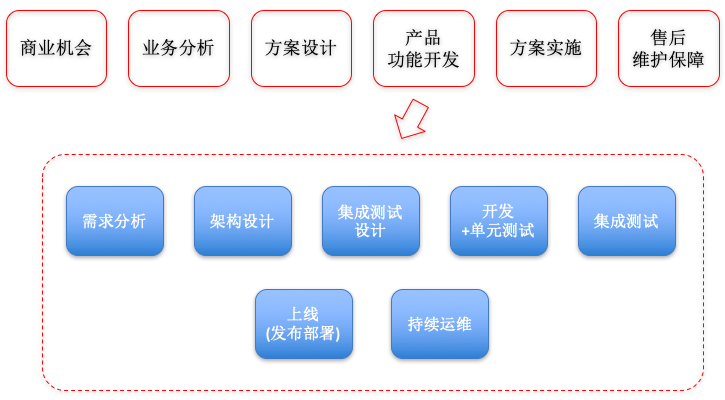

- 00 开篇词 怎样成长为优秀的软件架构师？.md
- 01 架构设计的宏观视角.md
- 02 大厦基石：无生有，有生万物.md
- 03 汇编：编程语言的诞生.md
- 04 编程语言的进化.md
- 05 思考题解读：如何实现可自我迭代的计算机？.md
- 06 操作系统进场.md
- 07 软件运行机制及内存管理.md
- 08 操作系统内核与编程接口.md
- 09 外存管理与文件系统.md
- 10 输入和输出设备：交互的演进.md
- 11 多任务：进程、线程与协程.md
- 12 进程内协同：同步、互斥与通讯.md
- 13 进程间的同步互斥、资源共享与通讯.md
- 14 IP 网络：连接世界的桥梁.md
- 15 可编程的互联网世界.md
- 16 安全管理：数字世界的守护.md
- 17 架构：需求分析 (上).md
- 18 架构：需求分析 (下) · 实战案例.md
- 19 基础平台篇：回顾与总结.md
- 20 桌面开发的宏观视角.md
- 21 图形界面程序的框架.md
- 22 桌面程序的架构建议.md
- 23 Web开发：浏览器、小程序与PWA.md
- 24 跨平台与 Web 开发的建议.md
- 25 桌面开发的未来.md
- 26 实战（一）：怎么设计一个“画图”程序？.md
- 27 实战（二）：怎么设计一个“画图”程序？.md
- 28 实战（三）：怎么设计一个“画图”程序？.md
- 29 实战（四）：怎么设计一个“画图”程序？.md
- 30 实战（五）：怎么设计一个“画图”程序？.md
- 31 辅助界面元素的架构设计.md
- 32 架构：系统的概要设计.md
- 33 桌面开发篇：回顾与总结.md
- 34 服务端开发的宏观视角.md
- 35 流量调度与负载均衡.md
- 36 业务状态与存储中间件.md
- 37 键值存储与数据库.md
- 38 文件系统与对象存储.md
- 39 存储与缓存.md
- 40 服务端的业务架构建议.md
- 41 实战（一）：“画图”程序后端实战.md
- 42 实战（二）：“画图”程序后端实战.md
- 43 实战（三）：“画图”程序后端实战.md
- 44 实战（四）：“画图”程序后端实战.md
- 45 架构：怎么做详细设计？.md
- 46 服务端开发篇：回顾与总结.md
- 47 服务治理的宏观视角.md
- 48 事务与工程：什么是工程师思维？.md
- 49 发布、升级与版本管理.md
- 50 日志、监控与报警.md
- 51 故障域与故障预案.md
- 52 故障排查与根因分析.md
- 53 过载保护与容量规划.md
- 54 业务的可支持性与持续运营.md
- 55 云计算、容器革命与服务端的未来.md
- 56 服务治理篇：回顾与总结.md
- 57 心性：架构师的修炼之道.md
- 58 如何判断架构设计的优劣？.md
- 59 少谈点框架，多谈点业务.md
- 60 架构分解：边界，不断重新审视边界.md
- 61 全局性功能的架构设计.md
- 62 重新认识开闭原则 (OCP).md
- 63 接口设计的准则.md
- 64 不断完善的架构范式.md
- 65 架构范式：文本处理.md
- 66 架构老化与重构.md
- 67 架构思维篇：回顾与总结.md
- 68 软件工程的宏观视角.md
- 69 团队的共识管理.md
- 70 怎么写设计文档？.md
- 71 如何阅读别人的代码？.md
- 72 发布单元与版本管理.md
- 73 软件质量管理：单元测试、持续构建与发布.md
- 74 开源、云服务与外包管理.md
- 75 软件版本迭代的规划.md
- 76 软件工程的未来.md
- 77 软件工程篇：回顾与总结.md
- 加餐 如何做HTTP服务的测试？.md
- 加餐 实战：“画图程序” 的整体架构.md
- 加餐 怎么保障发布的效率与质量？.md
- 热点观察 我看Facebook发币（上）：区块链、比特币与Libra币.md
- 热点观察 我看Facebook发币（下）：深入浅出理解 Libra 币.md
- 用户故事 站在更高的视角看架构.md
- 答疑解惑 想当架构师，我需要成为“全才”吗？.md
- 结束语 放下技术人的身段，用极限思维提升架构能力.md
- 课外阅读 从《孙子兵法》看底层的自然法则.md
76 软件工程的未来
76 | 软件工程的未来你好，我是七牛云许式伟。现在正值中国年，我在这里祝大家新年快乐。开开心心过大年的同时，注意安全第一，出门记得戴上口罩，少去人员聚集的地方。
好，那我们开始今天的学习，今天我们想聊聊软件工程的未来。
软件工程是一门非常年轻的学科，相比其他动辄跨世纪的自然科学而言，软件工程只有 50 年的历史。只有如此短暂实践的科学，今天我们来探讨它的未来，条件其实还并不算太充分。
但是我们的宗旨就是要每个领域都应该谈清楚过去（历史）与未来（趋势判断），所以今天不妨也理性来探讨一下。
在 “[软件工程的宏观视角]” 一讲中，我们引入了下图来表达软件工程的瀑布模型：

在这样一个模型里面，涉及的角色分工已经非常多：
- 产品经理；
- 架构师；
- 开发工程师；
- 质量保障（QA）工程师；
- 网站可靠性工程师（SRE）；
- ……
但这还只是常规描述的工种。实际的分工要细致很多。更不要说对特殊的领域，比如企业服务，也就是大家常说的 2B 行业，它的基本过程是这样的：

比之纯粹的产品研发上线过程，它多了单个客户的跟进与落地实施过程，也由此引入更多的角色分工，比如：售前工程师、交付（实施）工程师、售后工程师、项目经理等。
未来软件工程会走向何方？
首先 “快速变化” 是软件工程的自然属性，其 “不确定性” 也只能抑制而无法消除。
但显而易见的是，软件工程的问题最终还是由软件解决。事实上今天很多问题已经解决得很好，比如源代码的管理。我们经历了 cvs、svn，最终到今天的 git。基本上开发人员的协同问题已经形成非常约定俗成的方法论，并以软件或云服务的方式被固化下来。
今天，线上服务管理正如火如荼的发展。假以时日，不需要多久之后，一个全新的时代开启，我们中大部分人不必再为线上服务的稳定性操心。关于这块更详细的讨论，可以参考第四章 “服务治理篇”。
需求管理与测试这块也已经得到很好的解决。唯一比较遗憾就是是界面（UI）相关的测试虽然也有相关的工具链，但当前的普及率仍然极低。
这可能与大部分公司都较难保证界面的稳定性有关。如果我们经常变动界面，这就如同我们经常调整一个模块对外的接口规格一样，必然导致相关的测试案例编译通不过，或者测试通不过。这会让人沮丧，进而丧失对实现界面（UI）测试自动化的信心。自动化测试极其依赖被测模块接口的稳定性，这是我们今天常规自动化测试方法的限制。
当然另一方面，这也与界面测试相对高维，大部分公司的质量保障水平都还没有到达这个级别有关。从现实来看，虽然单元测试方法论已经极其成熟，但是仍然有不少企业在推行中遇到不少障碍。
可以预期，随着企业的平均工程水平逐步提升，最终会形成越来越多的有效的界面测试最佳实践的方法论，并得以大范围的推广。
从全局来看，今天软件工程已经形成较为成熟的分工。但各类分工的最佳实践与软件系统，仍然是相对孤立的。
这一定程度上也与软件工程还很年轻有关。从软件工程的软件系统发展来说，可以预期的是，未来一定会形成更加一体化的系统，上一道 “工序” 的输出就是下一道 “工序” 的输入。
但是今天一些 “工序” 的输出仍然是人肉进行传递，甚至没有标准化的仓库管理它。例如，产品经理输出的产品界面设计原型、架构师输出的架构设计文档，其传递过程仍然有极大的随意性。
但是，软件工程的最大不确定性就来源于 “设计” 类工作，包括产品设计与软件的架构设计。今天虽然产品设计和架构设计也都有一些独立的工具，但普及度与刚才说的开发与测试类工程实践相比完全是小巫见大巫。
这是可以理解的，产品经理与架构师在软件工程中属于小众群体，其培养难度极高，很多经验也很难形成传统意义上的 “知识点” 来传递。所以真正意义上合格的产品经理与架构师是比较少的，和程序员（软件开发工程师）的规模完全无法相比。
就拿架构师这个岗位举例。架构师的职责是什么，架构师工作的方法论是什么、培养架构师的方法论又是怎样的，这些今天并没有一个被广泛接受的实践。
为什么我会写这个架构课专栏，以及为什么成立七牛大学开启线下的架构师实战训练营，也是希望能够在一定程度上找到这些问题的最佳答案。
而事实上，产品经理的培养有更高的难度。严格意义上来说，成为产品经理前，首先应该成为架构师。我这个观念可能与大部分人的常识相悖，但是我个人对此深信不疑。
软件工程的未来发展会怎样，细节上很难给出确定性的判断。但是，我们相信，软件工程极大成熟的标志，是一体化的软件工程支撑系统，和高效的人才培养体系。包括今天仍然极为稚嫩的架构师培养体系，和产品经理培养体系，都应该得到了极大的完善。
到那个时候，软件工程就成为了一门真正成熟的科学。
结语
软件工程项目迭代快速、充满变化、充满不确定性。这使得软件工程成为一门极其独特魅力的科学。今天这门科学仍然还非常年轻，其发展只能以日新月异来形容。
软件工程的未来，它的成熟不单单是工程方法论和业务系统软件的成熟，也需要包括人才培养体系的成熟。因为，软件工程的不确定性与它充满设计与创造有关，人的主观能动性是它的优势，但也意味着不确定性无法得到彻底的消除。
我们要做的，只能说在大量的不确定性中，找到尽可能多的确定性。
如果你对今天的内容有什么思考与解读，欢迎给我留言，我们一起讨论。至此，本章 “软件工程篇” 已经到尾声阶段，下一讲我们将对本章的内容进行回顾与总结。
如果你觉得有所收获，也欢迎把文章分享给你的朋友。感谢你的收听，我们下期再见。
© 2019 - 2023 Liangliang Lee. Powered by gin and hexo-theme-book.